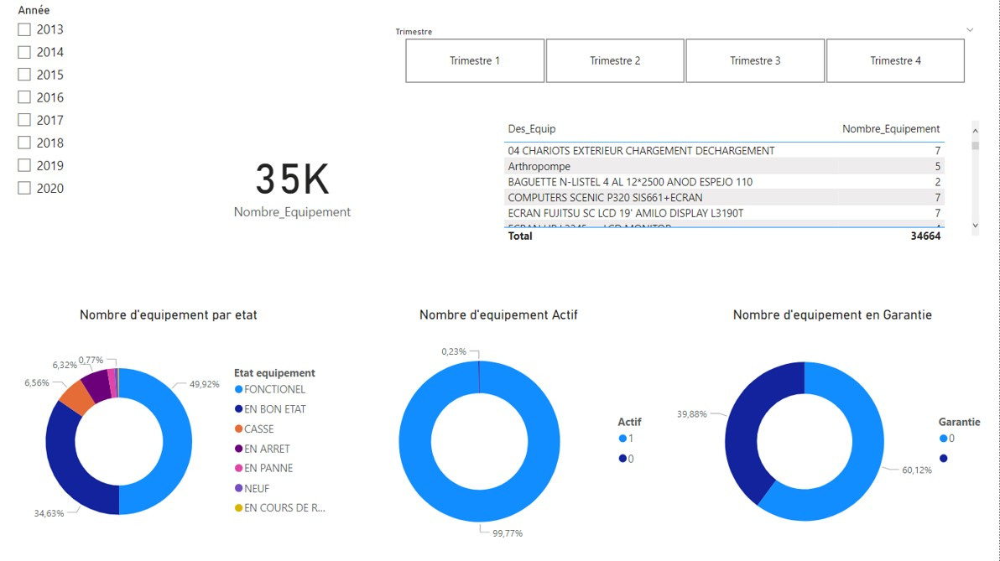

Pendant mon année de terminale j'ai réalisé, avec ma collègue Lina BEN HAMADOU, un projet pour ma spécialitéBig data et l’analyse de données
Voici une image de notre jeu en pleine partie :
Vous pouvez trouver dans ce fichier pdf (cliquez) le dossier que j'ai réalisé pour ce projet.
Ici vous avez accès au présentation du projet.
Lors de ma deuxième année de Licence en informatique, j'ai réalisé, avec ma camarade notre projet fin d'année
Voici une image de notre jeu en pleine partie :
Vous pouvez trouver dans ce fichier pdf (cliquez) le dossier que nous avons réalisé pour ce projet.